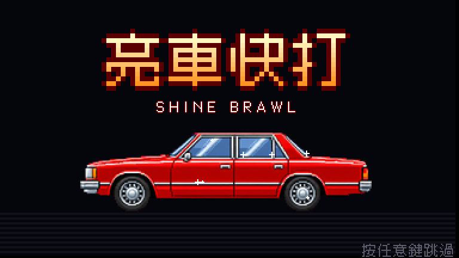
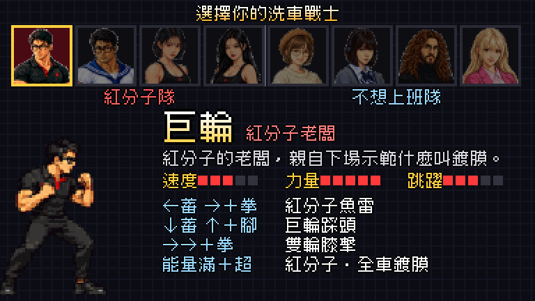
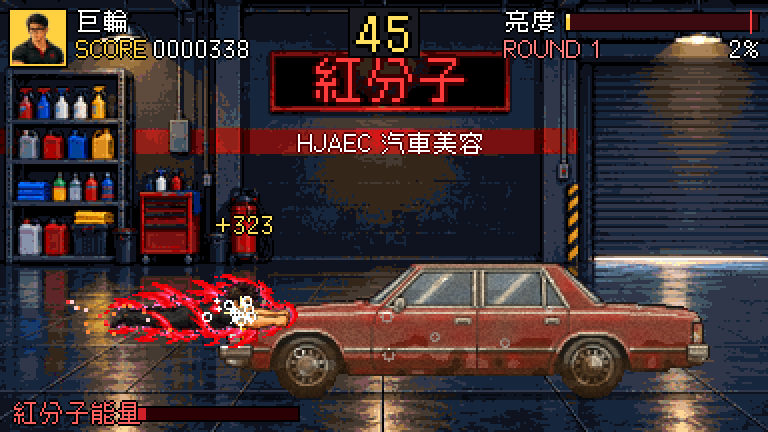
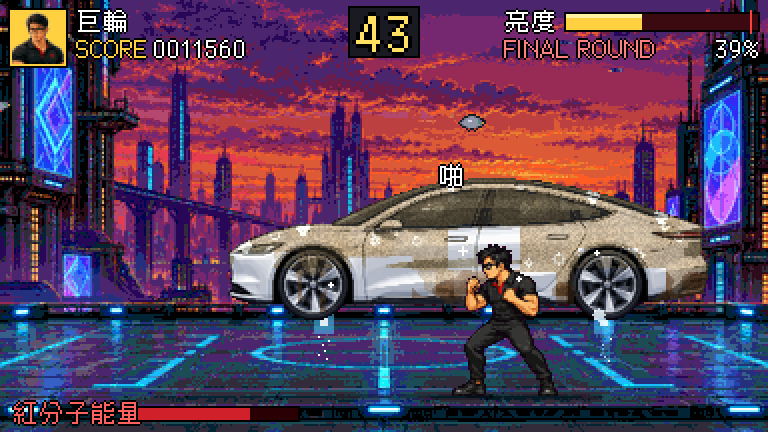
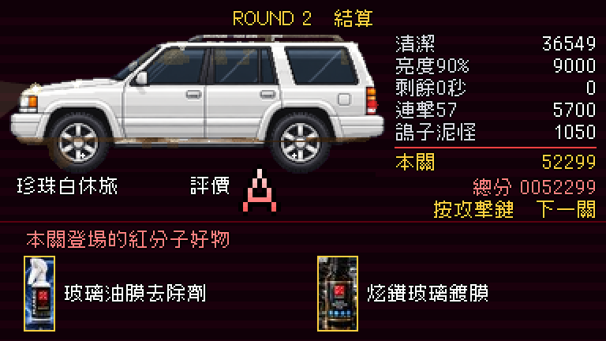
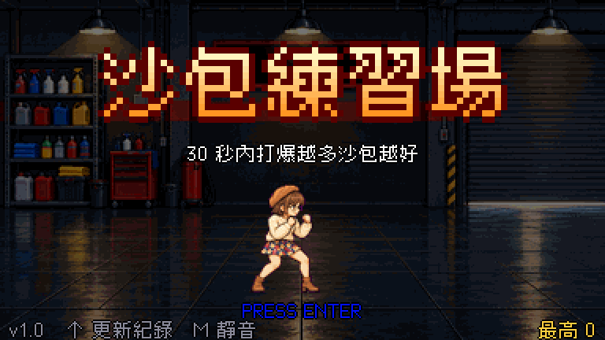
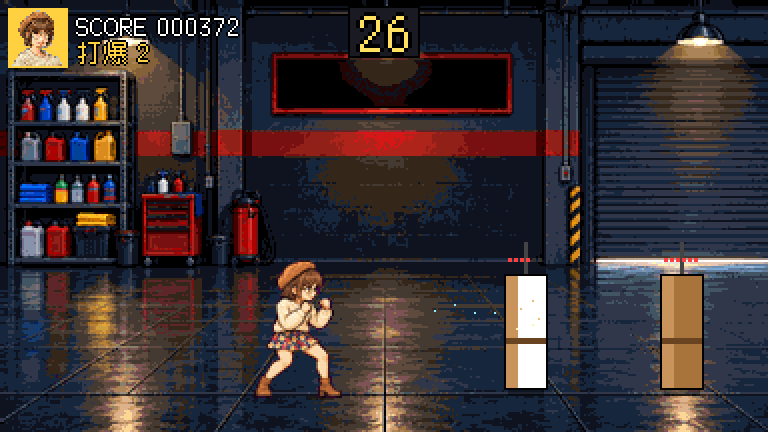
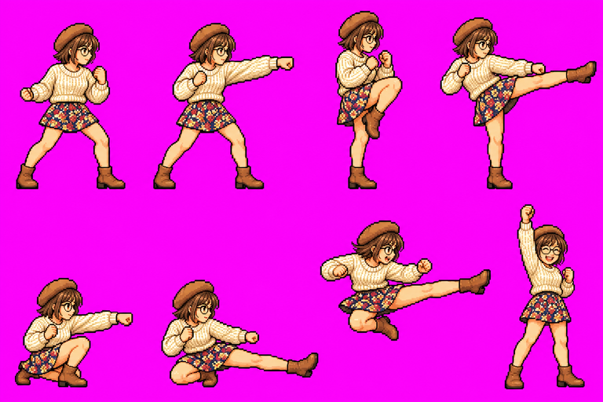
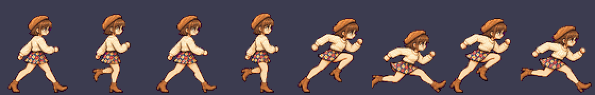

作品用這套流程做的遊戲
點標題可以直接玩，手機、電腦都可以。
紅分子 亮車快打
快打旋風「打車關」反過來：限時把髒車打到發亮。8 位角色各有專屬必殺，4 關（車庫、夕陽洗車站、雨夜、飛天電動車），開場動畫、官方商品照、桌墊出招表、排行榜。





沙包練習場（範本）
30 秒內打爆越多沙包越好。示範走路、跑步、跳、蹲、拳腳、飛彈、迴旋、打擊停頓、粒子、暫停、版本與更新紀錄、桌墊出招表。


流程SKILL.md 的 0～7
開工前問清楚玩法、角色來源、原作／品牌規則、上線前要不要先問
企劃角色表（能力、三招必殺、指令）、關卡表、台詞出處
GPT 美術頭像、動作表 A 移動／B 普攻／C 必殺／D 走跑、背景、道具
切圖打包slice.py 去背、分格、對齊腳底；stage_art.py 背景與頭像
遊戲引擎從範本起手：狀態機、打擊感、HUD、桌墊、防誤觸
音樂音效WebAudio 音序器：每個場景一首、每個動作有音效
測試手動推進格數、截圖、自動遊玩 bot 調難度、全流程
上線GitHub Pages、?v= 防快取、版本號與更新紀錄

➜

安裝成 skill
git clone https://github.com/pokemonida99/arcade-game-maker.git ln -s "$PWD/arcade-game-maker" ~/.claude/skills/arcade-game-maker
之後跟 Claude 說「做一款街機風的小遊戲」「橫向清版」「快打風的獎勵關」，就會照這套流程做。
交付前一定檢查
- 改編作品的造型、台詞、年代照原作；真人照片只當參考，臉畫成原創像素臉
- 經典招式「像但不一樣」，每個角色的招式與特點真的不同
- 角色是逐格動作圖、背景是整張像素畫；生成圖逐張檢查多手多指
- 防誤觸放大與選取；標題有版本號、遊戲內看得到更新紀錄
- 不做每日登入、儲值、等時間；上線前先問